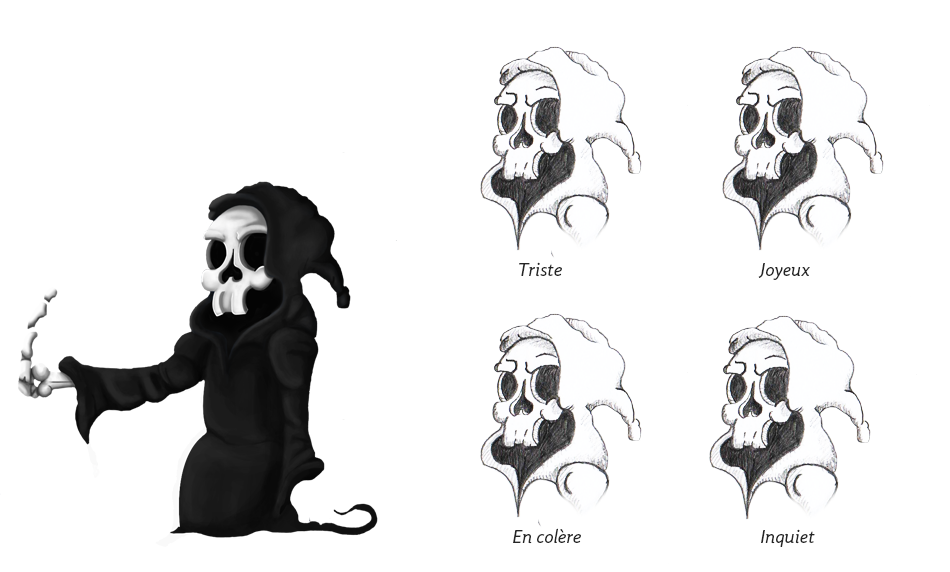

Le Passeur
Histoire
Anciennement bras-droit de la Mort, si le Passeur ne s’occupe plus que de faire passer les âmes vers l’Outre-Monde, c’est sans doute à cause de sa cupidité qui l’a amené à se faire corrompre par les vivants.
Se retrouvant à un poste plus inférieur que celui qu’il occupait avant, il continue cependant d’alimenter sa richesse personnelle en demandant une compensation financière aux âmes qui désireraient passer le Styx. Ledit prix évoluant selon les exactions passées, l’on comprend plus facilement pourquoi le Passeur désire tout particulièrement s’occuper d’Henry.
Concept
Malgré sa ressemblance avec "La Mort", je voulais donner au passeur un air d'enfant capricieux. Une cape trop grande pour lui, des sourcils osseux froncés, il y a néanmoins un côté attachant chez lui qui l'intègre mieux à l'univers.
 Parcours